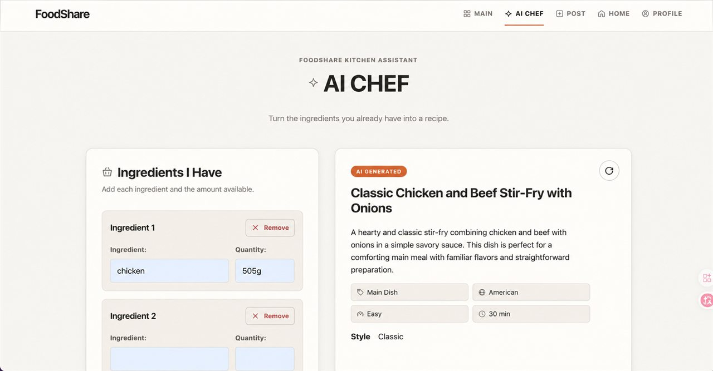

项目背景与目标
FoodShare 希望让用户在同一个平台中发现食谱、发布自己的做法并与其他烹饪爱好者互动。团队需要把传统内容平台功能、细粒度权限、异步交互和 AI 食谱生成整合到一个可测试的 Django 应用中。
个人职责与团队成果
我负责 / 参与
- 参与 Django 全栈功能开发与前后端联调。
- 参与认证、个人资料、内容所有权与 Staff 权限控制。
- 参与搜索筛选、社区互动、REST API 与后端测试验证。
- 准备 EC2 / SSH 安全加固的可复现材料，包括 CloudFormation 模板与审计脚本。
团队共同完成
- 完整食谱 CRUD、分类、搜索、分页与详情流程。
- 点赞、收藏、评论、个人主页和管理端。
- AI Chef、数据库、媒体存储与整体集成。
- Nginx/uWSGI/HTTPS 目标部署链路与最终演示。
证据边界：附件能够证明部署与安全 Runbook、CloudFormation 和 SSH 加固材料，但没有最终 EC2/HTTPS 截图。因此此案例不声称线上部署已被当前材料验证。
核心功能
- 食谱搜索、分类/菜系/难度/耗时筛选与分页。
- 注册、登录、个人资料、设备/会话管理与登录失败临时锁定。
- 食谱草稿、发布、编辑、删除、图片与结构化步骤。
- 点赞、收藏、评论、公开主页和个人数据面板。
- AI Chef 根据食材和偏好生成可验证、可发布的草稿。
- 版本化 Django REST Framework API 与自定义 Staff 管理面板。
系统架构
Browser→Nginx / HTTPS→uWSGI→Django
PostgreSQL↔Domain Apps↔Media Storage↔AI Provider
目标部署架构；最终线上实例与 HTTPS 证据待补
技术难点与解决方案
权限规则分散
把登录状态、内容所有权和 Staff 角色检查放在服务端，避免只依赖页面隐藏按钮；API 与页面流程共享相同的业务边界。
异步交互与服务器状态一致
搜索、筛选和社区操作通过 Fetch/AJAX 更新，仍由 Django 负责校验、持久化与返回安全错误。
AI 输出不能直接发布
AI Chef 的结果先进入用户绑定草稿，由后端做结构校验，再允许用户编辑和发布。
部署与安全配置
使用窄化 SSH 来源、禁用密码/Root 登录、审计脚本和可复现配置降低手工配置风险；实际主机结果需用最终环境截图验证。
产品界面

